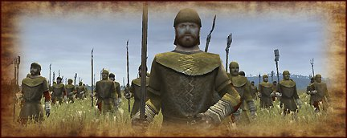

-
Quality: Peasant
Type: Rural Levy (lacks formal military training, poor discipline and morale)
Soldiers: 101
Attack: 1
Charge: 1
Weapon Type: Crude
Defense: 0
Armour: 0
Defense Skill: 0
Shield: 0
Hit Points:1
Recruitment Cost: 180
Upkeep: 85
-
In times of war peasants are forced from their farms and drafted into levies. Good cannon fodder.
Life at the bottom rung of medieval society is not easy or healthy. In times of war peasants are forced from their farms and drafted into levies, and if they are lucky, given some kind of simple weapon to fight with. Unsurprisingly, peasants are undisciplined soldiers who are better at fleeing than they are fighting.